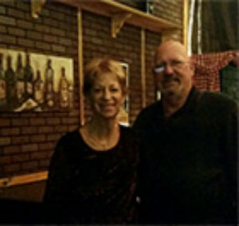
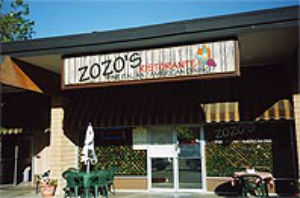

Want a glimpse of Old World Italy,
but can't afford the ticket? Find it in Reno on Lakeside Drive at a little
place called ZOZO'S Ristorante. Owners Sid and Judy Ashton invite you to
come on down for an authentic taste of Old World ambiance!
The Ashtons moved to Reno form the Bay area, with two high school-age kids in tow,
in 1986. "We were pure Silicon Valley," Judy Ashton said. "We wanted a complete
change of pace. My sister lives in the area, and we enjoyed the skiing at Tahoe.
Reno felt like the perfect fit.
The Ashtons had worked together for a number of years and knew the personal and
professional partnership would support entrepreneurship. "We wanted our own business,
although we didn't have a clue what kind," she said, "we toyed with the idea of
an office supply store. I'd worked in an office and knew paper clips inside out."
But we kept coming back to food. The whole family loved to eat," she said.
Not wanting to start from scratch, the Ashtons bought Sugarless Shack, a sugar-free
bakery and ice cream store a few doors down from their current location. After a
couple of years, a customer and rabid fan insisted on buying the place," Judy Ashton said,
"He made us an offer we couldn't refuse." The deal financed the Ashtons' next venture,
a Plumb Lane deli called Rockin' Roll Sandwich Factory, where they remained for a decade.
Meanwhile, their older son became a paramedic and took a job with REMSA.
Younger son, Kevin, went off to the Western Culinary Academy. After graduation,
he returned to Reno and worked in a number of kitchens, including a stint as
head chef at Carson City golf course. "Early on we had it in mind he would come
to work for us," Judy Ashton explained. "But we felt his training put him solidly
beyond making sandwiches. For a while, with Kevin in the kitchen, we did weekly
five-course French bistro-style meals. They were a wildly popular and a great
showcase for Kevin's talent."